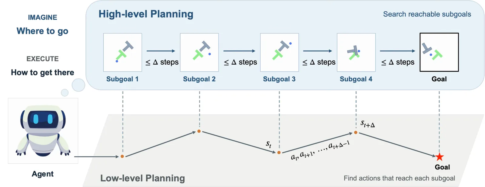
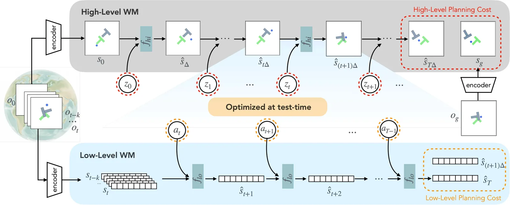
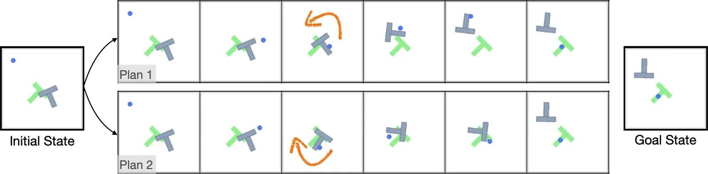
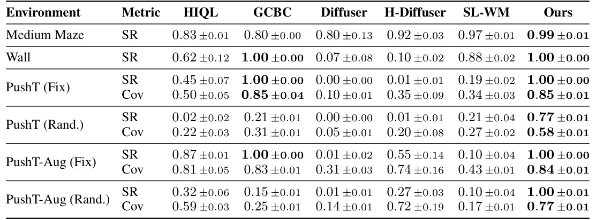

O Problema da Profecia Autorrealizável em Modelos de Mundo
Modelos de Mundo (World Models) têm se destacado como uma abordagem poderosa para a tomada de decisão em agentes encarnados. Ao aprender modelos preditivos da dinâmica do ambiente, eles permitem raciocínio em tempo de teste e a síntese de comportamentos novos para objetivos não vistos, buscando no espaço de ações. No entanto, o planejamento com esses modelos enfrenta dois desafios fundamentais: a complexidade da busca cresce exponencialmente com o horizonte de planejamento, e os erros de previsão se acumulam ao longo de longas trajetórias.
Devido a esses obstáculos, a maioria dos planejadores baseados em Modelos de Mundo é restrita a tarefas de curto horizonte, depende de abstrações de ação simplificadas ou opera em espaços de alto nível, como a linguagem, sacrificando o controle fino. A aprendizagem hierárquica oferece uma solução teórica para esse desafio de escalabilidade, decompondo problemas de longo prazo em abstrações gerenciáveis. Recentemente, estruturas hierárquicas foram introduzidas em planejadores baseados em difusão para evitar modelar trajetórias inteiras diretamente, melhorando a escalabilidade e a generalização além dos dados de treinamento de horizonte fixo.
A questão central que este paper aborda é: como habilitar essas capacidades para modelos de mundo agnósticos a tarefas, permitindo planejamento zero-shot de longo prazo para objetivos não vistos? Uma abordagem direta seria simplesmente aumentar o horizonte de previsão ou usar abstração de ação. No entanto, tentativas anteriores de modelos de mundo hierárquicos tipicamente dependem de priors específicos da tarefa para funcionar efetivamente, confiando em habilidades pré-treinadas, políticas de baixo nível ou funções de valor para verificar a viabilidade dos subobjetivos.
Essa dependência surge porque o planejamento é fundamentalmente adversarial: sem essas restrições de ancoragem, um otimizador poderoso explorará inevitavelmente as deficiências de um modelo de mundo aprendido, descobrindo atalhos irreais ou 'buracos de minhoca' nas transições de estado. Para tornar os modelos de mundo hierárquicos adequados para o planejamento, precisamos construir um espaço latente que condense informações de trajetória para minimizar a complexidade da busca, mas que permaneça inerentemente bem comportado para evitar que o planejador explore transições irreais.
A Ideia Central: Desacoplar Alcançabilidade de Controle
Os autores introduzem o ID-WM (Implicit Dynamics World Models), uma arquitetura que se baseia na percepção de que o planejamento eficaz requer o desacoplamento da alcançabilidade topológica dos detalhes de execução. O framework consiste em dois componentes principais: um modelo de mundo de alto nível baseado em difusão e um modelo de mundo de baixo nível determinístico.
O modelo de alto nível não modela explicitamente a dinâmica completa. Em vez disso, ele funciona como um gerador de estados vizinhos, mapeando um espaço latente gaussiano simples para o manifold de estados alcançáveis dentro de uma distância fixa do estado atual. O modelo de baixo nível atua como um solucionador de dinâmica inversa, recuperando as ações precisas necessárias para transitar entre esses subobjetivos.
Ao tratar o ruído gaussiano como uma ação implícita de alto nível, o planejador pode buscar em uma distribuição bem comportada em vez de espaços de habilidades complexos e descontínuos. Isso permite que o sistema raciocine puramente sobre 'para onde ir', enquanto o modelo de baixo nível recupera o 'como chegar' com precisão. Essa abordagem prioriza a viabilidade física local sobre padrões comportamentais globais, permitindo a síntese de planos de longo prazo a partir de segmentos curtos.

Arquitetura Técnica: Como o ID-WM Funciona
A arquitetura do ID-WM é dividida em dois estágios intercalados. O primeiro é o planejamento de alto nível. Dado um estado inicial e um objetivo, o modelo de mundo de alto nível (High-Level World Model - HWM) utiliza uma rede de difusão. Esta rede é condicionada ao estado atual e a um vetor de ruído gaussiano. A saída não é uma ação direta, mas uma distribuição de estados futuros possíveis dentro de um horizonte temporal Δ passos à frente.
O uso de difusão aqui é crucial. Em vez de prever um único futuro determinístico, o modelo gera uma distribuição diversificada de estados vizinhos. Isso permite que o planejador explore diferentes caminhos viáveis no espaço de estados. O vetor de ruído atua como um 'token' de decisão de alto nível, simplificando o espaço de busca para uma distribuição gaussiana unitária, que é matematicamente mais tratável do que espaços de ações complexos.
O segundo estágio é o controle de baixo nível. Uma vez que um subobjetivo é selecionado pelo planejador de alto nível, o modelo de mundo de baixo nível (Low-Level World Model - LWM) é ativado. Este modelo é determinístico e baseado em Transformer. Ele é condicionado tanto no estado atual quanto no subobjetivo desejado, atuando como um solucionador de dinâmica inversa. Sua função é calcular a sequência de ações de baixo nível necessárias para mover o agente do estado atual para o subobjetivo, garantindo que a transição seja fisicamente viável.
Esse ciclo se repete: o planejador de alto nível propõe uma nova sequência de subobjetivos, e o controlador de baixo nível executa as ações correspondentes. Essa estrutura permite que o sistema lide com horizontes de planejamento muito longos, decompondo o problema em subproblemas menores e mais fáceis de resolver, mitigando a acumulação de erros que afetaria um modelo de nível único.

Experimentos e Resultados
Os autores avaliaram o ID-WM em três suites de ambientes: navegação em paredes (Wall), manipulação de objetos (PushT) e navegação em labirintos (Maze). As tarefas variam de centenas a milhares de passos de ambiente. O objetivo era testar a capacidade do modelo de gerar subobjetivos viáveis, generalizar para objetivos zero-shot e escalar com a complexidade do ambiente.
Nos testes de geração de estados vizinhos, o modelo de alto nível demonstrou ser capaz de gerar estados futuros diversos e fisicamente alcançáveis. Em ambientes como PushT, onde há interações complexas entre o agente e o objeto, o modelo capturou bem a distribuição multi-modal das configurações possíveis, mostrando uma cobertura suave das configurações do objeto. Isso é um pré-requisito necessário para o planejamento, pois permite que o sistema generalize para objetivos não vistos.
Na avaliação de planejamento hierárquico, o ID-WM foi comparado com métodos de aprendizado por imitação (GCBC), aprendizado por reforço offline (HIQL), planejadores baseados em difusão (Diffuser, Hierarchical Diffuser) e planejadores com modelos de mundo de nível único (Single-level WM com MPC). O ID-WM superou todos os baselines em taxas de sucesso, especialmente em tarefas de longo horizonte.

Escalabilidade e Generalização
Uma das contribuições mais importantes do paper é a demonstração de escalabilidade. Nos testes com labirintos de tamanhos crescentes (de 3x3 até 13x13), enquanto outros métodos degradavam significativamente devido à esparsidade de dados em ambientes maiores, o ID-WM manteve o desempenho mais alto. Isso ocorre porque o ID-WM combina modelagem de dinâmica local com planejamento de alto nível, efetivamente 'costurando' regiões de dados esparsos, sem depender de cobertura global de trajetórias.
Além disso, o modelo escalou bem com o horizonte do objetivo. Em tarefas de PushT onde os objetivos estavam a mais de 150 passos de distância, o ID-WM manteve uma taxa de sucesso quase perfeita. Em contraste, um baseline de nível único que tentava buscar em todo o horizonte falhava devido à acumulação de erros. Isso confirma que a estrutura hierárquica permite que o sistema mantenha a precisão na chegada ao objetivo, mesmo quando a distância é grande.
Os autores também testaram o planejamento baseado em visão, usando observações de alta dimensão (imagens 64x64). O ID-WM foi capaz de gerar subobjetivos confiáveis e sequenciais, garantindo progresso constante. Em comparação, um planejador de vídeo baseado em linguagem (AVDC) falhou em produzir planos significativos, provavelmente porque os pares iniciais de objetivo estavam fora da distribuição dos dados de treinamento. Isso destaca a vantagem da busca iterativa de subobjetivos sobre a geração simultânea, que depende fortemente da cobertura de trajetórias no conjunto de dados.

Limitações e Considerações Finais
Apesar dos resultados promissores, o paper reconhece limitações importantes. A primeira é o tempo de inferência. A dependência da otimização baseada em busca dentro do espaço latente de difusão resulta em tempos de inferência mais altos do que políticas reativas ou modelos de mundo determinísticos. O planejamento hierárquico adiciona uma camada de complexidade computacional que pode ser um gargalo para aplicações em tempo real estrito.
Uma segunda limitação é que, embora a hierarquia impeça que a complexidade do planejamento escale com o comprimento da trajetória, ela ainda escala com a dimensionalidade do espaço de estados. Para ambientes altamente complexos com espaços de estado muito grandes, a integração de aprendizado de representações compactas e estruturadas poderia melhorar ainda mais o processo de planejamento.
Os autores sugerem que trabalhos futuros devem explorar planejamento amortizado ou baseado em gradientes para mitigar o gargalo de inferência. Além disso, a integração de técnicas de representação mais eficientes pode tornar o framework aplicável a ambientes ainda mais complexos. O ID-WM representa, no entanto, um passo promissor em direção à tomada de decisão robusta e de longo prazo, demonstrando que desacoplar a alcançabilidade da execução é uma estratégia eficaz para superar as limitações dos modelos de mundo monolíticos.
Conclusão
O ID-WM propõe uma nova maneira de pensar sobre o planejamento em agentes encarnados. Ao separar a questão de 'onde ir' (resolvida por um modelo de difusão que gera estados vizinhos viáveis) da questão de 'como chegar' (resolvida por um modelo de dinâmica inversa), o sistema evita as armadilhas de erros acumulados e buscas cegas em espaços de alta dimensão. Os resultados mostram que essa abordagem não apenas supera métodos existentes, mas também generaliza melhor para tarefas não vistas e ambientes complexos, abrindo caminho para agentes mais autônomos e confiáveis.
O que fica
- ID-WM desacopla o planejamento de alto nível (geração de subobjetivos via difusão) do controle de baixo nível (dinâmica inversa), reduzindo a acumulação de erros em longos horizontes.
- O modelo supera baselines de estado da arte em 38,5% e ganha 135% sobre modelos de mundo de nível único, especialmente em tarefas não vistas e de longo prazo.
- A abordagem escala bem com a complexidade do ambiente e tamanho do labirinto, 'costurando' regiões de dados esparsos sem depender de cobertura global de trajetórias.
- A principal limitação é o custo computacional da inferência baseada em busca no espaço latente de difusão, que é maior do que políticas reativas determinísticas.
Paper original: Hierarchical World Models with Implicit Dynamics
Comentários
Nenhum comentário ainda. Seja o primeiro.